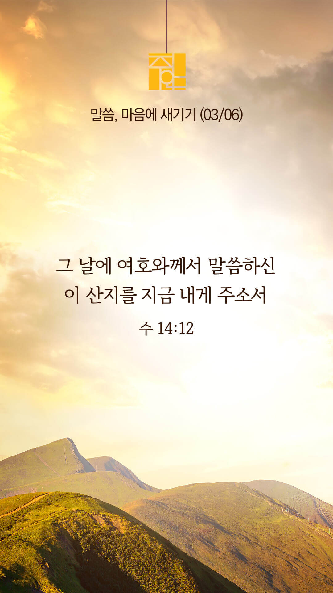

기도실 안내
2022년 03월 06일 (주일)
- 온라인 기도실은 온 회중이 함께 주님 앞으로 나아가는 자리입니다
- 30분 정도 여유를 가지고 하시기 바랍니다
- 말씀과 묵상, 찬양과 기도로 나아갑니다
- 배경 음악이 나올 수 있습니다 볼륨을 조절해주세요
준비가 되셨으면 아래의 버튼을 눌러주세요
할렐루야
내 영혼아 여호와를 찬양하라
시 146:1
- 가사를 묵상하며 읽습니다
예수의 이름으로
예수의 이름으로 나는 일어서리라
주가 주신 능력으로 나는 일어서리라
원수가 날 향해 와도 쓰러지지 않으리
주가 주신 능력으로 주가 주신 능력으로
주가 주신 능력으로 일어서리
할렐루야
내 영혼아 여호와를 찬양하라
시 146:1
예수의 이름으로 by 김대환
위의 찬양이 끝나면 말씀읽기를 눌러주시면 됩니다
주의 말씀은 내 발에 등이요
내 길에 빛이니이다 (시119:105)
오늘의 말씀입니다
음악 소리가 크면 조절하시기 바랍니다

마음의 묵상
여호수아 14:12
“그 날에 여호와께서 말씀하신 이 산지를 지금 내게 주소서 당신도 그 날에 들으셨거니와 그 곳에는 아낙 사람이 있고 그 성읍들은 크고 견고할지라도 여호와께서 나와 함께 하시면 내가 여호와께서 말씀하신 대로 그들을 쫓아내리이다 하니”
1. 강대한 아낙 자손의 성읍을 믿음으로 취하는 갈렙의 모습을 보며 어떤 마음이 드나요?
2. 갈렙은 누구를 의지하고 있나요? 누가 함께 하실 줄 믿고 있나요?
3. ‘이 산지를 내게 주소서’ 당신에게 주신 생업, 가정, 사역을 위해 간절히 기도합시다
“여호와께서 나와 함께 하시면”
회개, 삶의 방향을 바꾸는 결정
저에겐 의로움이 하나도 없습니다
“주여 들으소서 주여 용서하소서
주여 들으시고 행하소서 지체치 마옵소서
나의 하나님이여 주 자신을 위하여 하시옵소서 이는 주의 성과 주의 백성이 주의 이름으로 일컫는바 됨이니이다”
- 다니엘 9:19장 -
3분 정도 회개하며 주님 앞에 나아갑니다
사슴이 시냇물을 찾기에 갈급함 같이
시 42:1
- 다음의 말씀을 소리 내어 읽습니다
[시편 40장 1-4절]
1 내가 여호와를 기다리고 기다렸더니 귀를 기울이사 나의 부르짖음을 들으셨도다
2 나를 기가 막힐 웅덩이와 수렁에서 끌어 올리시고 내 발을 반석 위에 두사 내 걸음을 견고케 하셨도다
3 새 노래 곧 우리 하나님께 올릴 찬송을 내 입에 두셨으니 많은 사람이 보고 두려워하여 여호와를 의지하리로다
4 여호와를 의지하고 교만한 자와 거짓에 치우치는 자를 돌아보지 아니하는 자는 복이 있도다
하나님 나라
1. 한국교회와 선교를 위한 기도
하나님 아버지,
한국 교회를 말씀과 기도로 거룩하게 하사 세상 속에서 빛과 소금의 역할을 감당하게 하옵소서.
간절한 마음으로 3분 정도 기도합시다
나라와 민족
2. 대선을 위한 기도
하나님 아버지,
이 나라의 상처와 아픔을 치유하고 회복으로 이끄는 지도자, 미래를 향해 희망을 열어가는 지도자를 세워 주옵소서. 선거가 투명하고 공정하게 치러지게 하소서.
간절한 마음으로 3분 정도 기도합시다
가정
3. 가정을 위한 기도
하나님 아버지,
가족의 주인이 하나님이심을 인정하며 예배로 가정을 세우게 하옵소서.
간절한 마음으로 3분 정도 기도합시다
다음 세대
4. 다음 세대를 위한 기도
하나님 아버지,
다음세대가 예수 그리스도 안에서 참 소망을 발견하고 인생의 분명한 목적과 이유를 발견하게 하옵소서.
간절한 마음으로 3분 정도 기도합시다
주안교회
5. 주안 교회를 위한 기도
하나님 아버지,
제가 '탕자의 비유'에 나온 바로 그 맏아들입니다. 저의 잃어버린 상태는 다른 모든 사람보다 더 심각합니다. 그런데 하나님 아버지께서 다시 나를 찾아주시고, 일방적인 사랑과 은혜로 저를 품에 안아 주시니 감사합니다. 이제 다시 찾은 바 된 진정한 형으로서 아버지를 위하여 세상의 수많은 잃어버린 동생들을 찾아 나서게 하옵소서. 그래서 우리 각자가 이 맏아들 비유의 결론을 성령님의 도우심으로 아름답게 완성하게 하옵소서.
간절한 마음으로 3분 정도 기도합시다
감사의 기도
- 오늘 기도를 인도하신 주님께 감사를 올려드립니다
- 아래의 구절을 읽고 주님께 감사의 마음을 올려드립시다
“주는 나의 도움이시요 건지시는 자시라 나의 하나님이여 지체하지 마소서”
- 시편 40장 17절 -
고요한 가운데 잠시 침묵하시기 바랍니다
파송, 세상을 향하여
- 오늘의 온라인 기도를 마쳤습니다
기도를 들으신 주님께서 평안히 가라 하십니다
주님께서 우리와 함께 하시니 두려울 것이 없습니다
새벽을 깨우며
- 새벽기도회 안내입니다